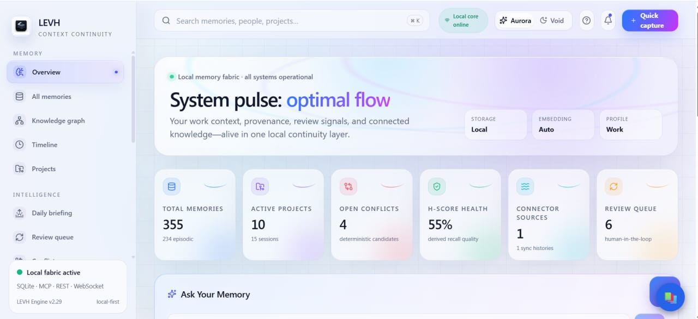
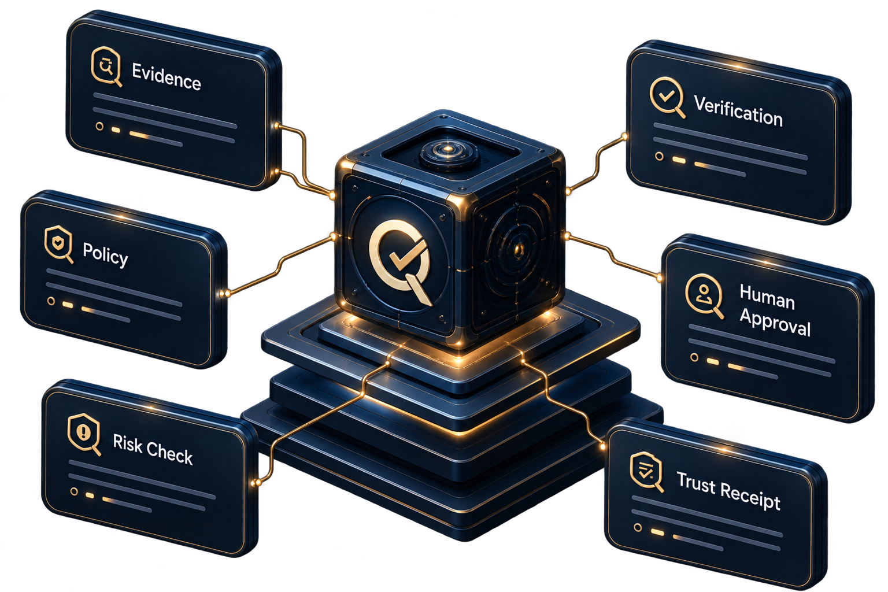
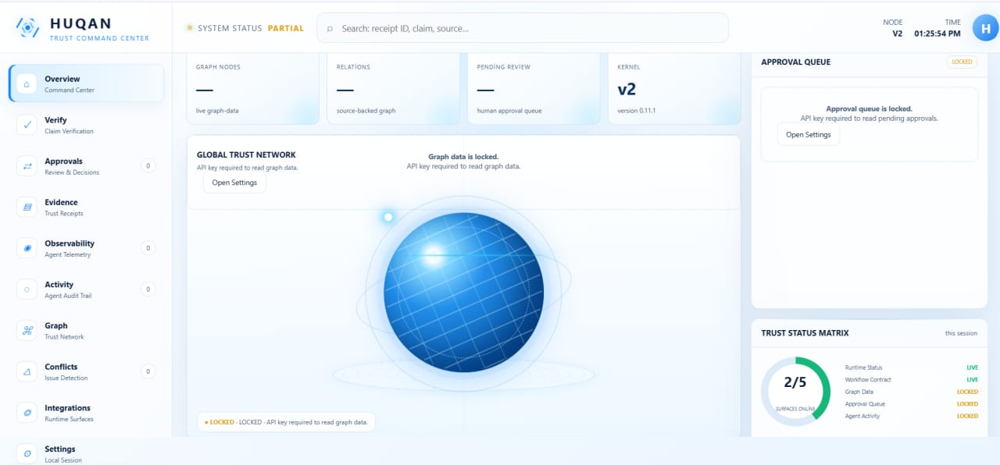

HUQAN
The main project is HUQAN, the open-source AI-agent governance and security framework.
Explore the GitHub Repository →Open-source work focused on making AI-agent behavior more observable, reviewable, and accountable.

My name is Ali Ulu, and I am the founder of HUQAN. I am building HUQAN around a simple concern: as AI systems and agents become more capable, it becomes increasingly important to understand what they claim, what they remember, and what they are about to do before those outputs become decisions or real-world actions.
HUQAN began as an open-source project focused on making AI-agent behavior more observable, reviewable, and accountable. My goal is not to claim that every AI problem has been solved, but to build practical safeguards that help people inspect evidence, understand provenance, review risk, and keep meaningful approval boundaries around consequential actions.
HUQAN is a local-first, partial-trust observation and governance layer for AI-agent workflows. It brings together evidence, provenance, verification, contradiction and risk checks, policy decisions, human approval, and auditable Trust Receipts.
In practical terms, HUQAN is intended to help teams understand what an agent is doing, why an output or action was allowed or stopped, and what evidence or approval was involved. The project includes open-source developer surfaces such as CLI, REST, MCP, and local UI workflows, with governance and approval boundaries around selected agent-action paths.
HUQAN is not an LLM, a universal truth engine, or a guarantee that hallucinations will disappear. It does not replace the underlying models, identity systems, or every production security control. Its current role is more focused: a practical checkpoint between “the model said it” and “we trusted it.”

The main project is HUQAN, the open-source AI-agent governance and security framework.
Explore the GitHub Repository →
The portfolio can also highlight the HUQAN Obsidian Plugin, which explores a more accessible way to observe and work with governed AI-agent workflows, as well as ongoing work around evidence, verification, policy, approval, and agent safety.
View Technical Details →For technical details and the current implementation, please link visitors to the GitHub repository rather than making broad claims on the page.
github.com/ali-ulu/huqanThe portfolio can present my focus areas as open-source product building, AI-agent governance, verification and provenance, policy and approval workflows, software architecture, developer tooling, and building in public.
I would prefer the wording to emphasize the work and the learning journey honestly rather than presenting me as an expert in every area.